Új felületek. Valódi kódból. ForgeBlog 0.2.0 · A diagnosztikai DOM/React megjelenítőn készített felvételek. Nem designmockupok, nem production-build igazolások. A különbségeket és a tesztkorlátokat a QA-jelentés részletezi.
Főoldal Főoldal mobilon Cikkoldal Cikk mobilon Alkotói áttekintés Áttekintés mobilon Szövegszerkesztő Írás mobilon Mobil cikkelőnézet Osztott előnézet Galéria összeállítása Médiatár 26 téma katalógusa Beállítások Történetek listája Főoldal Diagnosztikai felvétel · 1440 px viewport 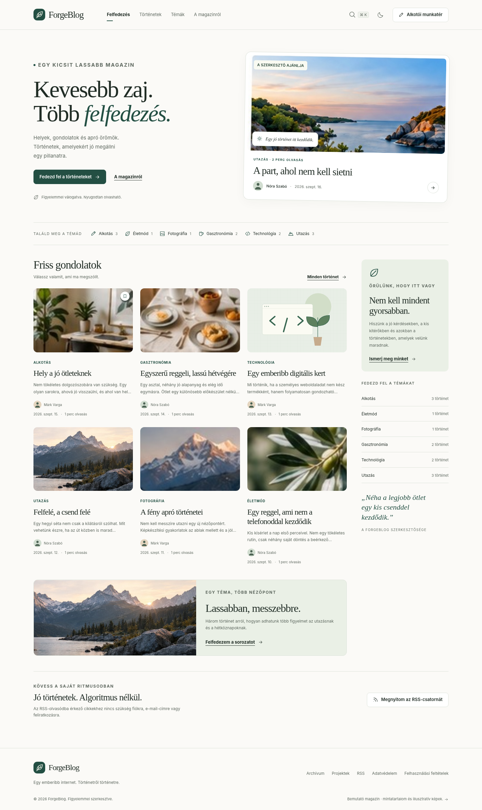
Főoldal mobilon Diagnosztikai felvétel · 390 px viewport 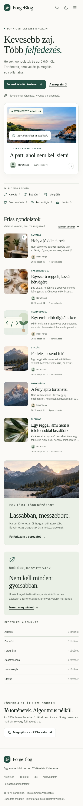
Cikkoldal Diagnosztikai felvétel · 1440 px viewport 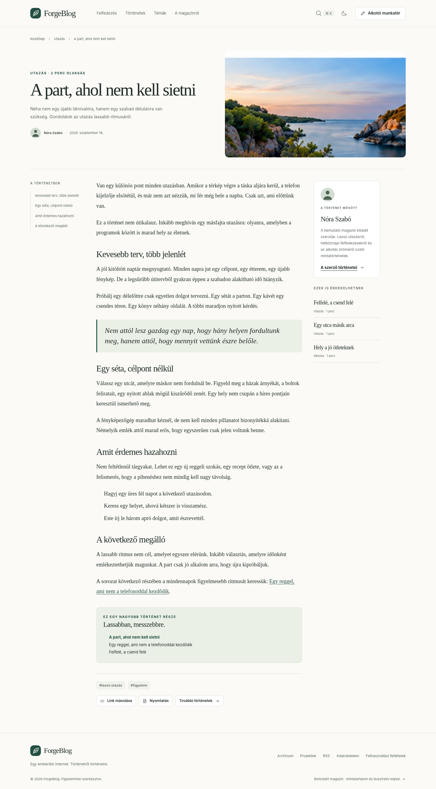
Cikk mobilon Diagnosztikai felvétel · 390 px viewport 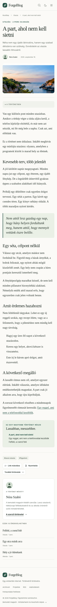
Alkotói áttekintés Diagnosztikai felvétel · 1440 px viewport 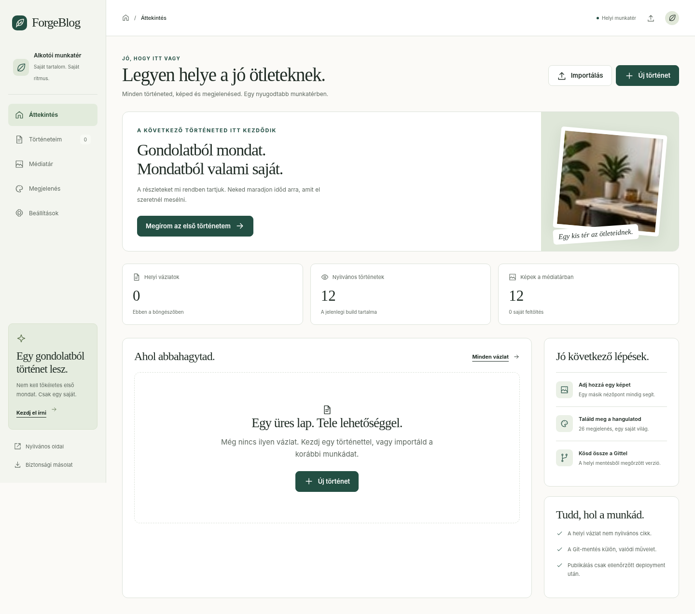
Áttekintés mobilon Diagnosztikai felvétel · 390 px viewport 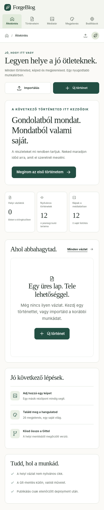
Szövegszerkesztő Diagnosztikai felvétel · 1440 px viewport 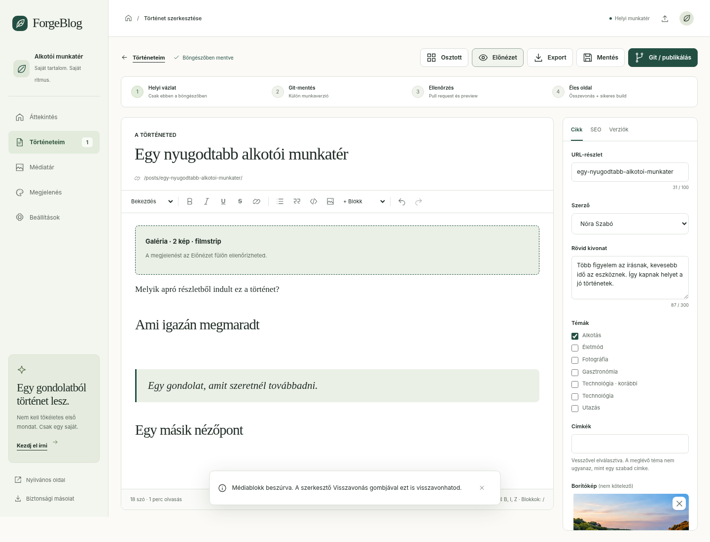
Írás mobilon Diagnosztikai felvétel · 390 px viewport 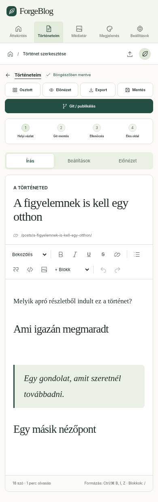
Mobil cikkelőnézet Diagnosztikai felvétel · 390 px viewport 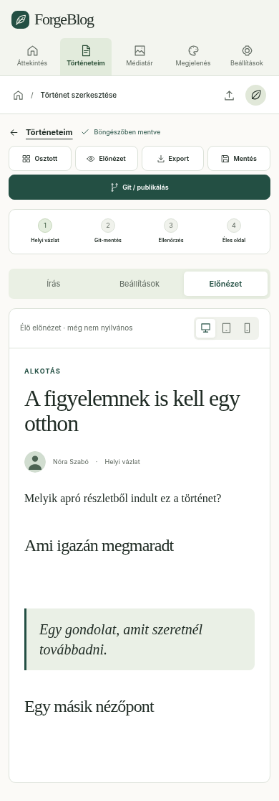
Osztott előnézet Diagnosztikai felvétel · 1440 px viewport 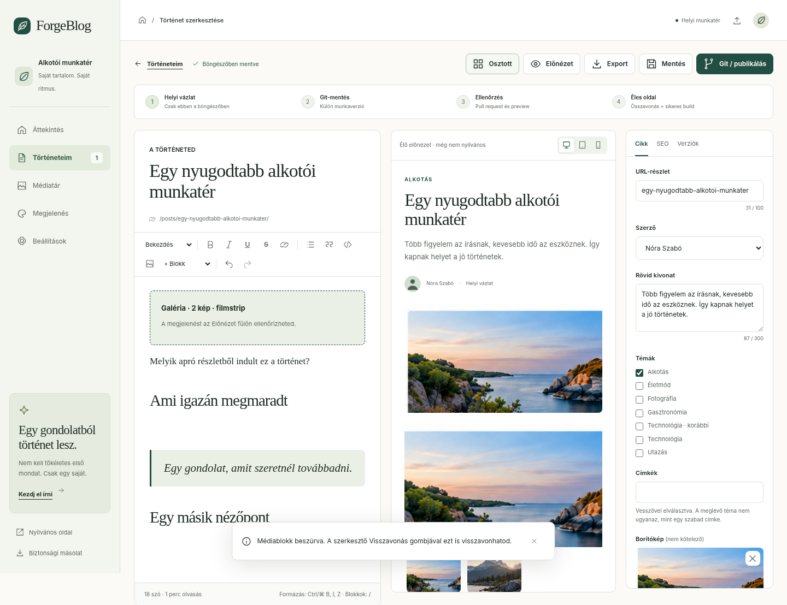
26 téma katalógusa Diagnosztikai felvétel · 1440 px viewport 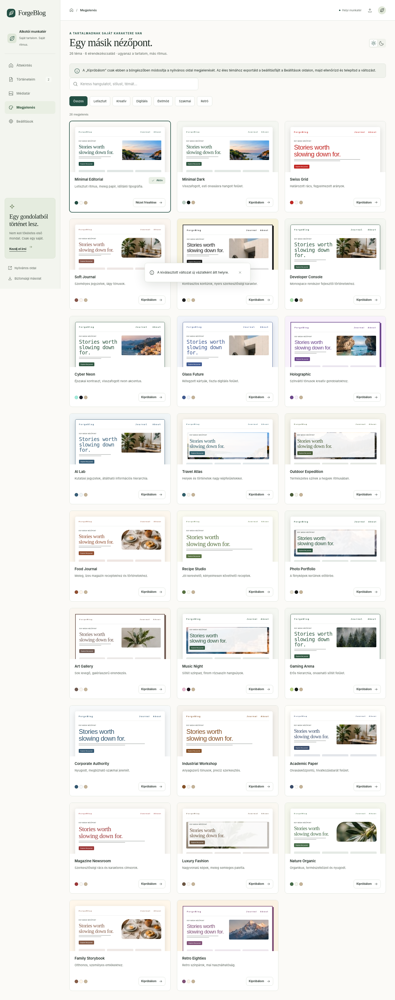
Beállítások Diagnosztikai felvétel · 1440 px viewport 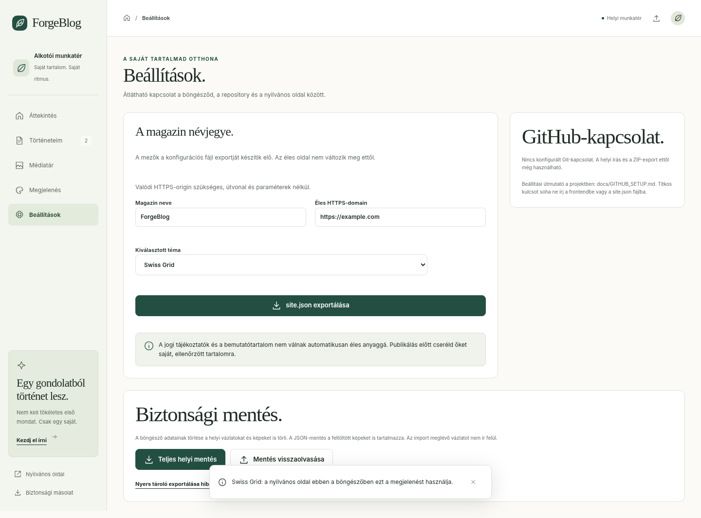
Történetek listája Diagnosztikai felvétel · 1440 px viewport 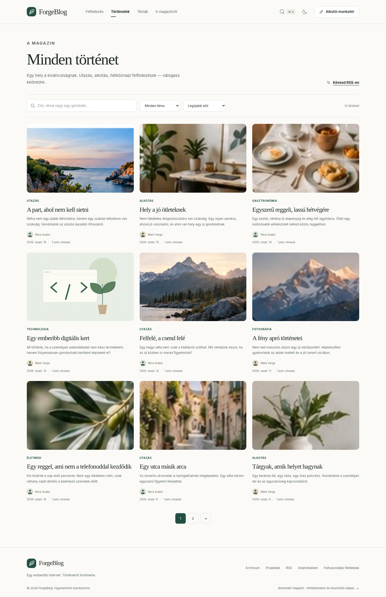